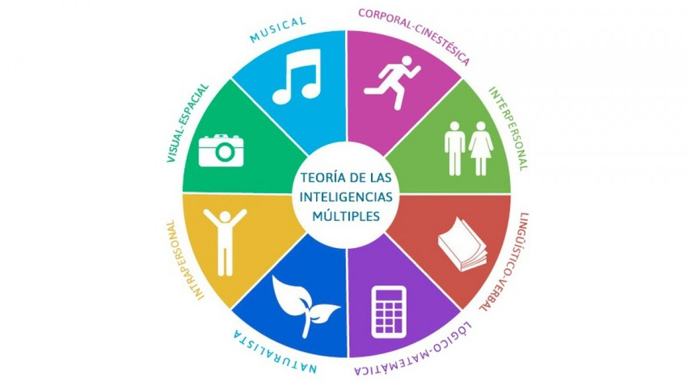

La teoría de las Inteligencia Múltiples de Howard Gardner nació en 1983, donde presenta siete tipos de inteligencias específicas las cuales se trabajan simultáneamente, por todos los seres humanos, con la finalidad de adaptarse a su entorno; según Gardner, estas inteligencias sirven para resolver problemas, contruir productos culturales, sociales o tecnológicos, además de ayudar de manera rápida y eficaz nuevos aprendizajes. Howard Gardner señala que existen casos claros en los que personas presentan unas habilidades cognitivas extremadamente desarrolladas, y otras muy poco desarrolladas: es el caso de los savants. Un ejemplo de savant fue Kim Peek, que a pesar de que en general tenía poca habilidad para razonar, era capaz de memorizar mapas y libros enteros, en prácticamente todos sus detalles. Estos casos excepcionales hicieron que Gardner pensase que la inteligencia no existe, sino que en realidad hay muchas inteligencias independientes.
Elige un hecho histórico adecuado a la edad y madurez de tus chicos, por ejemplo, el descubrimiento de América, la caída del muro de Berlín o la llegada del hombre a la Luna, y pídeles que investiguen sobre ese suceso como si fueran periodistas, respondiendo a las 5 respuestas que estos utilizan en su trabajo: ¿Por qué?, ¿Dónde?, ¿Qué?, ¿Cuándo? y ¿Quién/es?, así desarrollarán sus inteligencias naturalista y lógico-matemática. Diseña un muro interactivo con un recurso gratuito tipo “Padlet”, o si no tienes acceso a las nuevas tecnologías, crea un mural con cartulina y rotuladores en el que tus chicos, una vez que hayan elegido y clasificado la información recogida (esquemas propios, recortes de prensa, vídeos, etc.), respondan a esas 5 preguntas. Con esta tarea estarás impulsando sus inteligencias lingüística, visual-espacial y corporal-kinestésica. Sugiéreles que escojan una canción o melodía con la que identifiquen ese suceso histórico, activando su inteligencia musical. Por ejemplo, la caída del muro de Berlín puede asociarse con la famosa canción de David Bowie “Heroes”, mientras que la transición española del régimen franquista a la democracia se ve muy bien reflejada en la popular canción de Jarcha “Libertad sin ira”. Crea un espacio para que reflexionen sobre qué les emociona de ese suceso, qué han descubierto sobre él que incida directamente en sus vidas, etc. y dirige un debate entre ellos/as para que puedan exponer sus conclusiones. Así cerrarás la actividad posibilitando que desarrollen sus inteligencias intra e interpersonal.